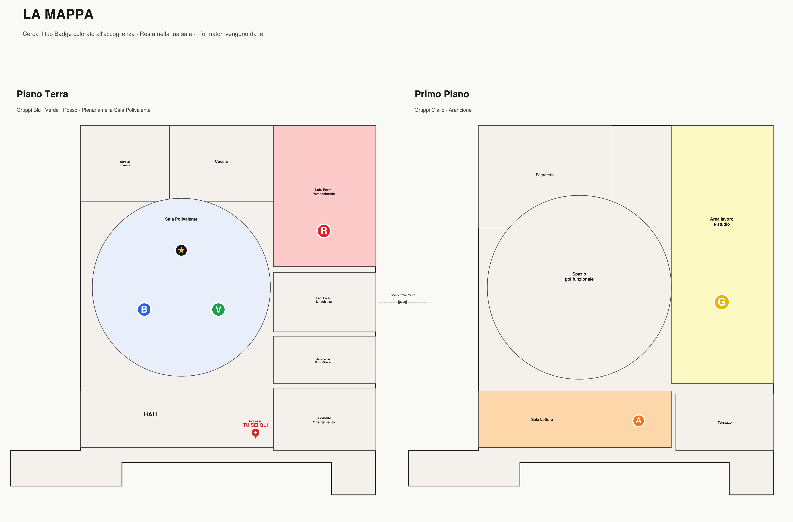

Benvenuto
Una giornata in 5 stazioni per trasformare l'esperienza di Servizio Civile in CV, pitch, percorsi formativi, profili professionali e prime iniziative. Ipotesi B — Gruppi fissi: ricevi il Badge colorato all'accoglienza, raggiungi la tua sala e restaci. I formatori vengono da te, una stazione alla volta.
La mappa
Cerca il tuo Badge colorato all'accoglienza · Resta nella tua sala · I formatori vengono da te. 10:10—13:25 · 35 min per stazione · cambio di stazione 5 min.

I 5 gruppi · postazioni fisse
Ricevi il badge all'accoglienza · Raggiungi la tua sala · Resta lì per tutta la giornata. I formatori si spostano da una sala all'altra.
Le 5 stazioni · mobili
Ogni stazione lavora su una competenza orientativa CMS (Career Management Skills). I formatori si spostano da una sala all'altra · 35 min per stazione · cambio stazione 5 min.
Dal portfolio al CV e alla lettera
"Come traduco quello che ho fatto in qualcosa che un selezionatore capisce?"
CMS · AutoconoscenzaRaccontarsi al colloquio: pitch e role playing
"Cosa porto di mio quando ho 90 secondi per presentarmi?"
CMS · Identità professionaleCompetenze e percorsi formativi
"Cosa mi serve imparare adesso per andare dove voglio andare?"
CMS · Punti di forzaDai Servizio Civile ai profili professionali
"Quali profili professionali sono già alla mia portata?"
CMS · Percorso di crescitaImprenditorialità e intraprenditorialità
"Quale spazio di iniziativa posso aprire, dentro o fuori un'organizzazione?"
CMS · Orizzonti futuriMatrice di rotazione
Trova la colonna del tuo gruppo (colore) e la riga del turno in corso: l'incrocio indica la stazione che arriva nella tua sala in quel turno. 5 minuti di cambio tra una rotazione e l'altra.
| Turno | Orario | A · Arancione | B · Blu | C · Giallo | D · Rosso | E · Verde |
|---|---|---|---|---|---|---|
| 1 | 10:10—10:45 | S1 · CV e lettera | S2 · Colloquio | S3 · Formazione | S4 · Profili | S5 · Iniziativa |
| Cambio stazione · 10:45—10:50 | spostamento | spostamento | spostamento | spostamento | spostamento | |
| 2 | 10:50—11:25 | S2 · Colloquio | S3 · Formazione | S4 · Profili | S5 · Iniziativa | S1 · CV e lettera |
| Cambio stazione · 11:25—11:30 | spostamento | spostamento | spostamento | spostamento | spostamento | |
| 3 | 11:30—12:05 | S3 · Formazione | S4 · Profili | S5 · Iniziativa | S1 · CV e lettera | S2 · Colloquio |
| Cambio stazione · 12:05—12:10 | spostamento | spostamento | spostamento | spostamento | spostamento | |
| 4 | 12:10—12:45 | S4 · Profili | S5 · Iniziativa | S1 · CV e lettera | S2 · Colloquio | S3 · Formazione |
| Cambio stazione · 12:45—12:50 | spostamento | spostamento | spostamento | spostamento | spostamento | |
| 5 | 12:50—13:25 | S5 · Iniziativa | S1 · CV e lettera | S2 · Colloquio | S3 · Formazione | S4 · Profili |

Sito di supporto
Inquadra il QR (o usa il link qui sotto) per accedere a tutte le risorse della giornata: stazioni in dettaglio, schede, tutor virtuale, follow-up.